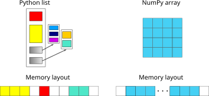

Efficient Array Computing (in Markdown)¶
Caution
The content below is nearly identical to the previous episode, and only the source file differs. This page is generated from an markdown file.
This episode introduces how to write high-performance numerical code in Python packages (Numpy, Pandas, and Scipy) by leveraging tools and libraries designed to optimize computation speed and memory usage. It explores strategies such as vectorization with NumPy, just-in-time compilation using Numba, and parallelization techniques that can significantly reduce execution time. These methods help Python developers overcome the traditional performance limitations of the language, making it suitable for intensive scientific and engineering applications.
Objectives
Understand limitations of Python’s standard library for large data processing
Understand the logic behind NumPy ndarrays and learn to use some NumPy numerical computing tools
Learn to use data structures and analysis tools from Panda
Instructor note
25 min teaching/type-along
25 min exercising
Why can Python be slow?¶
Computer programs are nowadays practically always written in a high-level human readable programming language and then translated to the actual machine instructions that a processor understands. There are two main approaches for this translation:
For compiled programming languages, the translation is done by a compiler before the execution of the program
For interpreted languages, the translation is done by an interpreter during the execution of the program
NumPy¶
NumPy is based on well-optimized C code, which gives much better performace than regular Python. In particular, by using homogeneous data structures, NumPy vectorizes mathematical operations where fast pre-compiled code can be applied to a sequence of data instead of using traditional for loops.
Arrays¶
The core of NumPy is the NumPy ndarray (n-dimensional array). Compared to a Python list, an ndarray is similar in terms of serving as a data container. Some differences between the two are:
ndarrays can have multiple dimensions, e.g. a 1-D array is a vector, a 2-D array is a matrix
ndarrays are fast only when all data elements are of the same type

Creating NumPy arrays¶
One way to create a NumPy array is to convert from a Python list, but make sure that the list is homogeneous (contains same data type) otherwise performace will be downgraded. Since appending elements to an existing array is slow, it is a common practice to preallocate the necessary space with np.zeros or np.empty when converting from a Python list is not possible.
Code for demonstration
import numpy as np
a = np.array((1, 2, 3, 4), float)
print(f"a = {a}\n")
# array([ 1., 2., 3., 4.])
list1 = [[1, 2, 3], [4, 5, 6]]
mat = np.array(list1, complex)
# create complex array, with imaginary part equal to zero
print(f"mat = \n {mat} \n")
# array([[ 1.+0.j, 2.+0.j, 3.+0.j],
# [ 4.+0.j, 5.+0.j, 6.+0.j]])
print(f"mat.shape={mat.shape}, mat.size={mat.size}")
# mat.shape=(2, 3), mat.size=6
Caution
You should copy the code above to a separate code block, or change its cell type from from Markdown to Code.
arange and linspace can generate ranges of numbers:
import numpy as np
a = np.arange(10)
print(a)
[0 1 2 3 4 5 6 7 8 9]
b = np.arange(0.1, 0.2, 0.02)
print(b)
[0.1 0.12 0.14 0.16 0.18]
c = np.linspace(-4.5, 4.5, 5)
print(c)
[-4.5 -2.25 0. 2.25 4.5 ]
Array operations and manipulations¶
All the familiar arithmetic operators in NumPy are applied elementwise:
# 1D example
import numpy as np
a = np.array([1, 2, 3])
b = np.array([4, 5, 6])
print(f" a + b = {a + b}\n a / b = {a / b}")
a + b = [5 7 9]
a / b = [0.25 0.4 0.5 ]
Exercise
Run the code below to get familiar with indexing in a 2D example.
# 2D example
import numpy as np
a = np.array([[1, 2, 3], [4, 5, 6]])
b = np.array([[10, 10, 10], [10, 10, 10]])
print(a+b)
Note
You can either copy the code from the cell above or download the code example from HERE.
Solution
import numpy as np
a = np.array([[1, 2, 3], [4, 5, 6]])
b = np.array([[10, 10, 10], [10, 10, 10]])
print(a+b)
[[11 12 13]
[14 15 16]]
Array indexing¶
Basic indexing is similar to Python lists. Note that advanced indexing creates copies of arrays.
# 1D example
import numpy as np
data = np.array([1,2,3,4,5,6,7,8])
# integer indexing
print("Integer indexing")
print(f"data = {data}")
print(f"data[3] = {data[3]}")
print(f"data[0:2] = {data[0:2]}")
print(f"data[-2] = {data[-2]}")
print(f"data[::-4] = {data[::-4]}")
# fancy indexing
print("\nFancy indexing")
print(f"data[[1,6,3]] = {data[[1,6,3]]}")
# boolean indexing
print("\nBoolean indexing")
print(f"data[data>5] = {data[data>5]}")
Integer indexing
data = [1 2 3 4 5 6 7 8]
data[3] = 4
data[0:2] = [1 2]
data[-2] = 7
data[::-4] = [8 4]
Fancy indexing
data[[1,6,3]] = [2 7 4]
Boolean indexing
data[data>5] = [6 7 8]
{kind=link}
Exercise
Run the code below to get familiar with indexing in a 2D example.
# 2D example
data = np.array([[1, 2, 3, 4],[5, 6, 7, 8],[9, 10, 11, 12]])
# integer indexing
print("Integer indexing")
print(f"data[1] = {data[1]}")
print(f"data[:, 1] = {data[:, 1]}")
print(f"data[1:3, 2:4] = {data[1:3, 2:4]}")
# fancy indexing
print("\nFancy indexing")
print(f"data[[0,2,1], [2,3,0]] = {data[[0,2,1], [2,3,0]]}")
# boolean indexing
print("\nBoolean indexing")
print(f"data[data>10] = {data[data>10]}")
Caution
Again, you should move the code above to a separate code block, or change its cell type from from Markdown to Code.
I/O with NumPy¶
Numpy provides functions for reading from/writing to files. Both ASCII and binary formats are supported with the CSV and npy/npz formats.
CSV
The numpy.loadtxt() and numpy.savetxt() functions can be used. They save in a regular column layout and can deal with different delimiters, column titles and numerical representations.
a = np.array([1, 2, 3, 4])
np.savetxt("my_array.csv", a)
b = np.loadtxt("my_array.csv")
print(a == b)
[ True True True True]
Attention
If you get an eror like xxx, you should import numpy before the first line import numpy as np.
Binary
The npy format is a binary format used to dump arrays of any shape. Several arrays can be saved into a single npz file, which is simply a zipped collection of different npy files. All the arrays to be saved into a npz file can be passed as kwargs to the numpy.savez() function. The data can then be recovered using the numpy.load() method, which returns a dictionary-like object in which each key points to one of the arrays.
a = np.array([1, 2, 3, 4])
b = np.array([5, 6, 7, 8])
np.savez("my_arrays.npz", array_1=a, array_2=b)
data = np.load("my_arrays.npz")
print(data['array_1'] == a) # [ True True True True]
print(data['array_2'] == b) # [ True True True True]
[ True True True True]
[ True True True True]
Random numbers¶
The module numpy.random provides several functions for constructing random arrays
random(): uniform random numbersnormal(): normal distributionchoice(): random sample from given array…
print(np.random.random((2,2)),'\n')
[[0.17199054 0.25395015]
[0.04178739 0.38217257]]
print(np.random.choice(np.arange(4), 10))
[0 2 2 0 1 0 1 1 2 2]
Warning
You might get different results from the above code example.
Pandas¶
Pandas is a Python package that provides high-performance and easy to use data structures and data analysis tools. The core data structures of Pandas are Series and Dataframes.
a Pandas
seriesis a one-dimensional NumPy array with an index which we could use to access the dataa
dataframeconsist of a table of values with labels for each row and column. A dataframe can combine multiple data types, such as numbers and text, but the data in each column is of the same type.each column of a dataframe is a series object - a dataframe is thus a collection of series.

Data analysis workflow¶
Pandas is a powerful tool for many steps of a data analysis pipeline:
To explore some of the capabilities, we start with an example dataset containing the passenger list from the Titanic, which is often used in Kaggle competitions and data science tutorials. First step is to load Pandas and download the dataset into a dataframe.
import pandas as pd
url = "https://raw.githubusercontent.com/pandas-dev/pandas/master/doc/data/titanic.csv"
# set the index to the "Name" column
titanic = pd.read_csv(url, index_col="Name")
Note
Pandas also understands multiple other formats, for example read_excel(), read_hdf(), read_json(), etc. (and corresponding methods to write to file: to_csv(), to_excel(), to_hdf(), to_json(), …)…)
We can now view the dataframe to get an idea of what it contains and print some summary statistics of its numerical data:
# print the first 5 lines of the dataframe
print(titanic.head())
# print some information about the columns
print(titanic.info())
# print summary statistics for each column
print(titanic.describe())
Missing/invalid data¶
What if your dataset has missing data? Pandas uses the value np.nan to represent missing data, and by default does not include it in any computations. We can find missing values, drop them from our dataframe, replace them with any value we like or do forward or backward filling.
titanic.isna() # returns boolean mask of NaN values
print(titanic.dropna()) # drop missing values
print(titanic.dropna(how="any")) # or how="all"
print(titanic.dropna(subset=["Cabin"])) # only drop NaNs from one column
print(titanic.fillna(0)) # replace NaNs with zero
Scipy¶
SciPy is a library that builds on top of NumPy. It contains a lot of interfaces to battle-tested numerical routines written in Fortran or C, as well as Python implementations of many common algorithms.
Let us look more closely into one out of the countless useful functions available in SciPy. curve_fit() is a non-linear least squares fitting function. NumPy has least-squares fitting via the np.linalg.lstsq() function, but we need to go to SciPy to find non-linear curve fitting. This example fits a power-law to a vector.
import numpy as np
from scipy.optimize import curve_fit
def powerlaw(x, A, s):
return A * np.power(x, s)
# data
Y = np.array([9115, 8368, 7711, 5480, 3492, 3376, 2884, 2792, 2703, 2701])
X = np.arange(Y.shape[0]) + 1.0
# initial guess for variables
p0 = [100, -1]
# fit data
params, cov = curve_fit(f=powerlaw, xdata=X, ydata=Y, p0=p0, bounds=(-np.inf, np.inf))
print("A =", params[0], "+/-", cov[0,0]**0.5)
print("s =", params[1], "+/-", cov[1,1]**0.5)
A = 10240.788123784849 +/- 984.5879720590807
s = -0.5372630409593478 +/- 0.08171727565402351
# optionally plot
import pandas as pd
import hvplot.pandas
data = pd.DataFrame({
"x": X,
"raw data": Y,
"power law": powerlaw(X, params[0], params[1])
})
scatter = data["raw data"].hvplot(kind="scatter", color="red")
line = data["power law"].hvplot()
(scatter * line)
Exercises¶
Working effectively with dataframes
Recall the curve_fit() method from SciPy discussed above, and imagine that we want to fit powerlaws to every row in a large dataframe. How can this be done effectively?
First define the powerlaw() function and another function for fitting a row of numbers:
import numpy as np
import pandas as pd
from scipy.optimize import curve_fit
def powerlaw(x, A, s):
return A * np.power(x, s)
def fit_powerlaw(row):
X = np.arange(row.shape[0]) + 1.0
params, cov = curve_fit(f=powerlaw, xdata=X, ydata=row, p0=[100, -1], bounds=(-np.inf, np.inf))
return params[1]
Next load a dataset with multiple rows similar to the one used in the example above:
df = pd.read_csv("https://raw.githubusercontent.com/ENCCS/hpda-python/main/content/data/results.csv")
# print first few rows
df.head()
Now consider these four different ways of fitting a powerlaw to each row of the dataframe:
# 1. Loop
powers = []
for row_indx in range(df.shape[0]):
row = df.iloc[row_indx,1:]
p = fit_powerlaw(row)
powers.append(p)
# 2. `iterrows()
powers = []
for row_indx,row in df.iterrows():
p = fit_powerlaw(row[1:])
powers.append(p)
# 3. `apply()
powers = df.iloc[:,1:].apply(fit_powerlaw, axis=1)
# 4. `apply()` with `raw=True`
# raw=True passes numpy ndarrays instead of series to fit_powerlaw
powers = df.iloc[:,1:].apply(fit_powerlaw, axis=1, raw=True)
Which one do you think is most efficient? You can measure the execution time by adding %%timeit to the first line of a Jupyter code cell. More on timing and profiling in a later episode.
Working effectively with dataframes
The execution time for four different methods are described below. Note that you may get different numbers when you run these examples.
# 1 Loop
%%timeit
powers = []
for row_indx in range(df.shape[0]):
row = df.iloc[row_indx,1:]
p = fit_powerlaw(row)
powers.append(p)
# 33.6 ms ± 682 µs per loop (mean ± std. dev. of 7 runs, 10 loops each)
# 2. `iterrows()`
%%timeit
powers = []
for row_indx,row in df.iterrows():
p = fit_powerlaw(row[1:])
powers.append(p)
# 28.7 ms ± 947 µs per loop (mean ± std. dev. of 7 runs, 10 loops each)
# 3. `apply()`
%%timeit
powers = df.iloc[:,1:].apply(fit_powerlaw, axis=1)
# 26.1 ms ± 1.19 ms per loop (mean ± std. dev. of 7 runs, 10 loops each)
# 4. `apply()` with `raw=True`
%%timeit
powers = df.iloc[:,1:].apply(fit_powerlaw, axis=1, raw=True)
# 24 ms ± 1.27 ms per loop (mean ± std. dev. of 7 runs, 10 loops each)
Further analysis of Titanic passenger list dataset
Consider the titanic dataset.
If you haven’t done so already, load it into a dataframe before the exercises:
import pandas as pd; url = "https://raw.githubusercontent.com/pandas-dev/pandas/master/doc/data/titanic.csv"; titanic = pd.read_csv(url, index_col="Name")
Compute the mean age of the first 10 passengers by slicing and the
meanmethodUsing boolean indexing, compute the survival rate (mean of “Survived” values) among passengers over and under the average age. Now investigate the family size of the passengers (i.e. the “SibSp” column):
What different family sizes exist in the passenger list?
Hint: try the
unique()method
What are the names of the people in the largest family group?
(Advanced) Create histograms showing the distribution of family sizes for passengers split by the fare, i.e. one group of high-fare passengers (where the fare is above average) and one for low-fare passengers
Hint: instead of an existing column name, you can give a lambda function as a parameter to
histto compute a value on the fly. For examplelambda x: "Poor" if titanic["Fare"].loc[x] < titanic["Fare"].mean() else "Rich").
Solution
Mean age of the first 10 passengers:
titanic.iloc[:10,:]["Age"].mean()ortitanic.iloc[:10,4].mean()ortitanic.loc[:"Nasser, Mrs. Nicholas (Adele Achem)", "Age"].mean()
Survival rate among passengers over and under average age:
titanic[titanic["Age"] > titanic["Age"].mean()]["Survived"].mean()andtitanic[titanic["Age"] < titanic["Age"].mean()]["Survived"].mean()
Existing family sizes:
titanic["SibSp"].unique()Names of members of largest family(ies):
titanic[titanic["SibSp"] == 8].indextitanic.hist("SibSp", lambda x: "Poor" if titanic["Fare"].loc[x] < titanic["Fare"].mean() else "Rich", rwidth=0.9)
Keypoints
NumPy provides a static array data structure, fast mathematical operations for arrays and tools for linear algebra and random numbers
Pandas dataframes are a good data structure for tabular data
Dataframes allow both simple and advanced analysis in very compact form
SciPy contains a lot of interfaces to battle-tested numerical routines